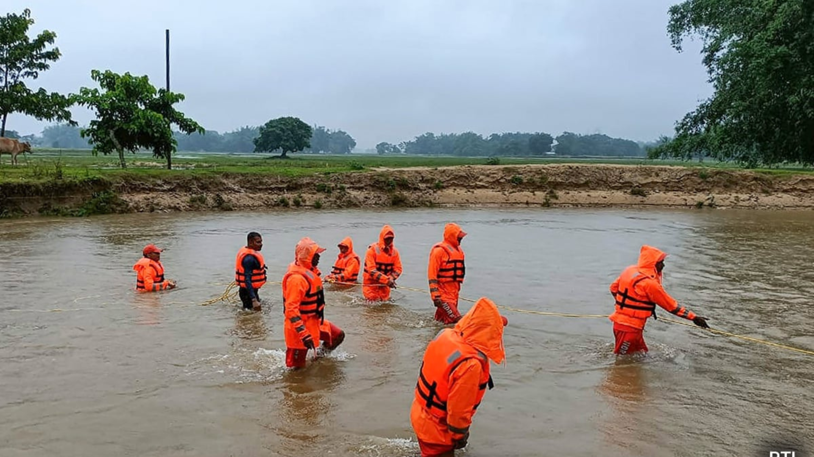

Essential Guide to Flood Management
Learn the fundamentals of flood management and prevention techniques.
Read MoreAccess comprehensive resources for flood management and agricultural practices
Comprehensive guides on flood management and prevention
Latest research and scientific studies in agricultural flood management
Frequently asked questions about our flood alert system
Learn the fundamentals of flood management and prevention techniques.
Read MoreStrategies and methods to protect your crops from flood damage.
Read More
Understanding and utilizing flood early warning systems effectively.
Read MoreA comprehensive study on the effectiveness of IoT devices in flood prediction and early warning systems.
View Full PaperNovel approaches to flood risk assessment using advanced machine learning algorithms and historical data analysis.
View Full PaperOur flood alert system uses a combination of IoT sensors, satellite data, and machine learning algorithms to predict and monitor potential flood risks in real-time. The system collects data from multiple sources including:
This data is processed through our advanced AI algorithms to provide accurate and timely flood predictions.
We use various types of sensors including:
These sensors work together to provide comprehensive environmental monitoring and early warning capabilities.
Yes, our system provides comprehensive API integration capabilities that allow it to work seamlessly with most modern farm management systems and IoT platforms. We support:
Our team can help you set up the integration with your existing systems.
The system can cover agricultural areas of any size, from small farms to large agricultural regions. Our coverage includes:
Coverage is customized based on your specific needs and local geographical conditions.
Our system provides frequent updates across different data types:
Update frequencies can be customized based on your specific monitoring needs and local conditions.